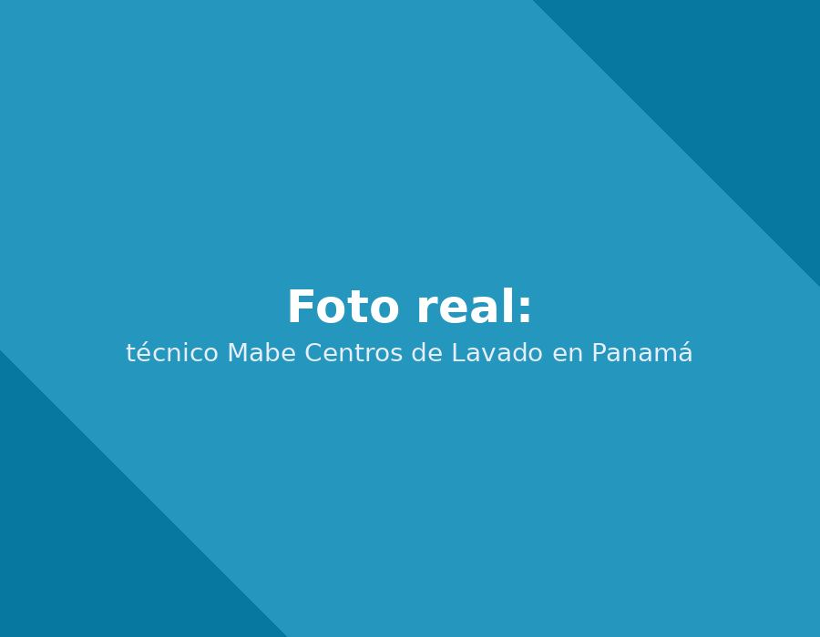

Reparación de centros de lavado Mabe (torres lavadora-secadora en un solo cuerpo): la solución más popular en apartamentos pequeños de Panamá, con diagnóstico independiente de cada función.

El centro de lavado —una lavadora y una secadora integradas en una sola torre— es cada vez más común en los apartamentos y estudios de Ciudad de Panamá por su ahorro de espacio. Su reto técnico es que combina dos sistemas distintos en un mismo gabinete, así que diagnosticamos cada función (lavado y secado) por separado antes de determinar el origen real de la falla.
| Falla y síntoma | Causa probable | Urgencia |
|---|---|---|
| La función de lavado funciona pero el secado no calienta La ropa queda bien lavada pero sale fría y húmeda del ciclo de secado. |
En un equipo combinado, el sistema de calentamiento es independiente del motor de lavado; suele ser la resistencia o el termostato del módulo de secado. | Medio |
| Fuga de agua en la base del equipo Agua acumulada debajo de la unidad combinada. |
Al ser un gabinete compacto, una manguera interna floja o un sello desgastado es más difícil de detectar sin desarmar el panel frontal. | Alto |
Escríbenos por WhatsApp o llama directamente. Respondemos de lunes a sábado, de 7:00am a 6:00pm.
Vivo en un estudio y el centro de lavado dejó de secar bien. Era el filtro de condensado, algo que ni sabía que existía. Ahora sé limpiarlo yo misma.